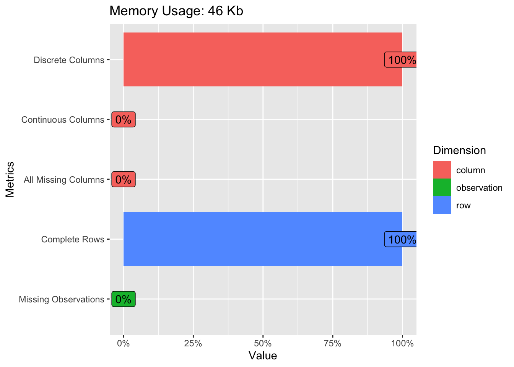
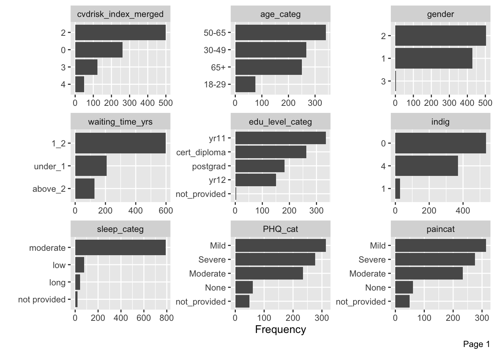
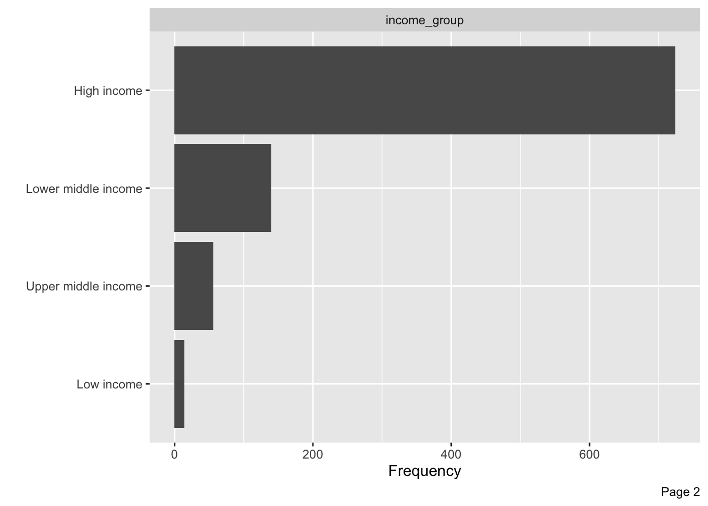
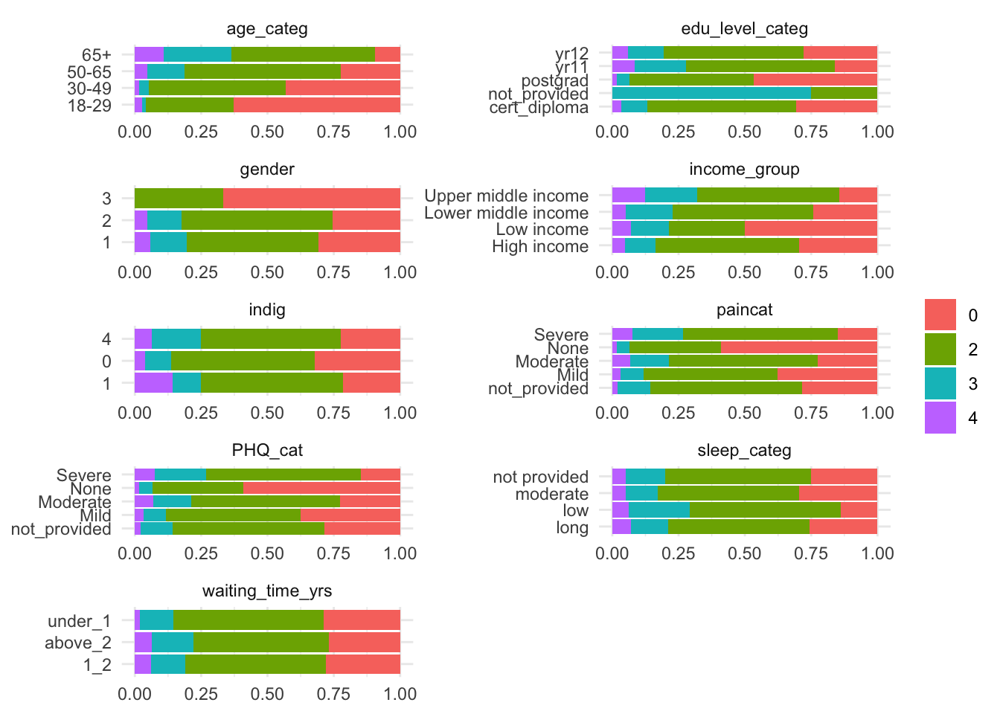
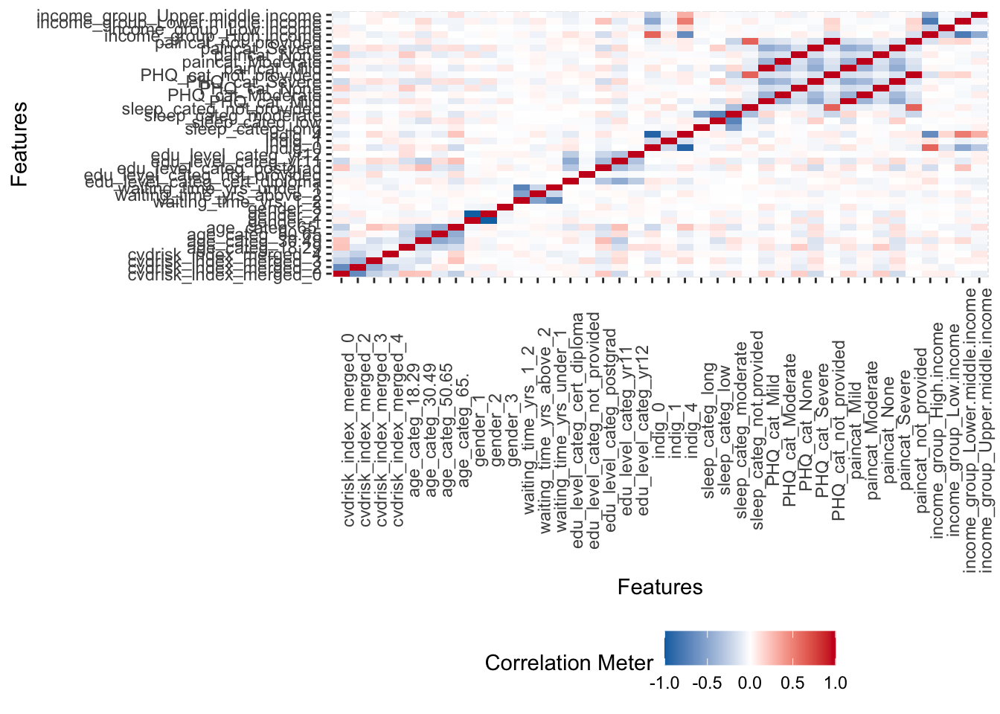
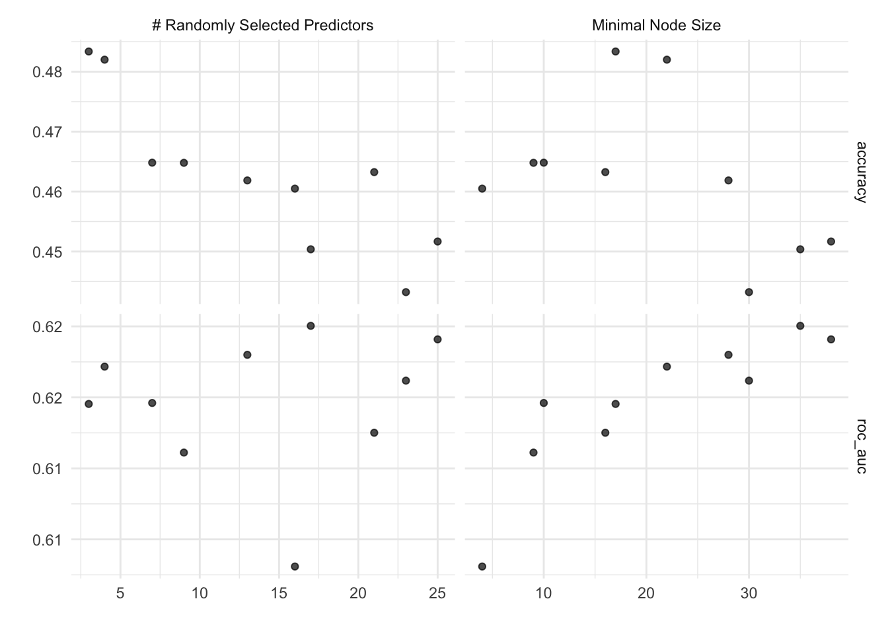
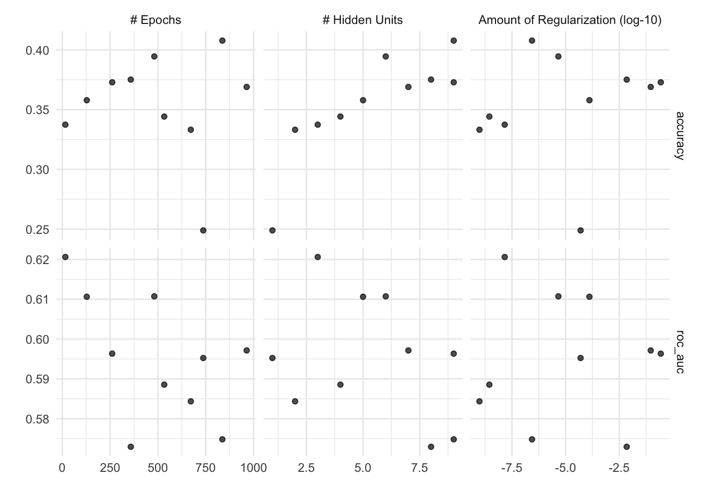
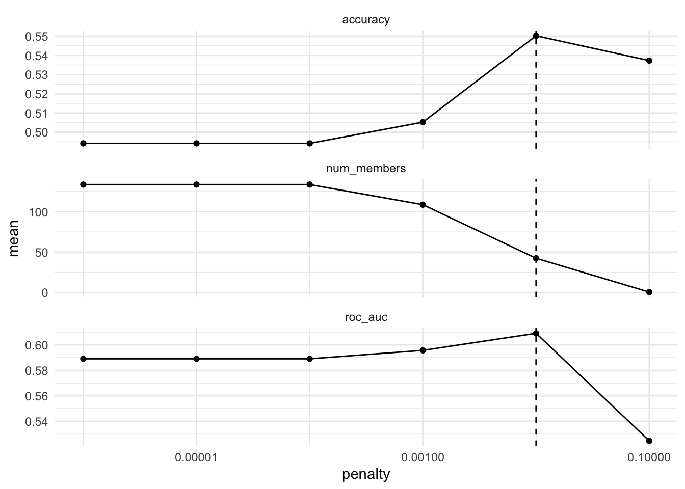
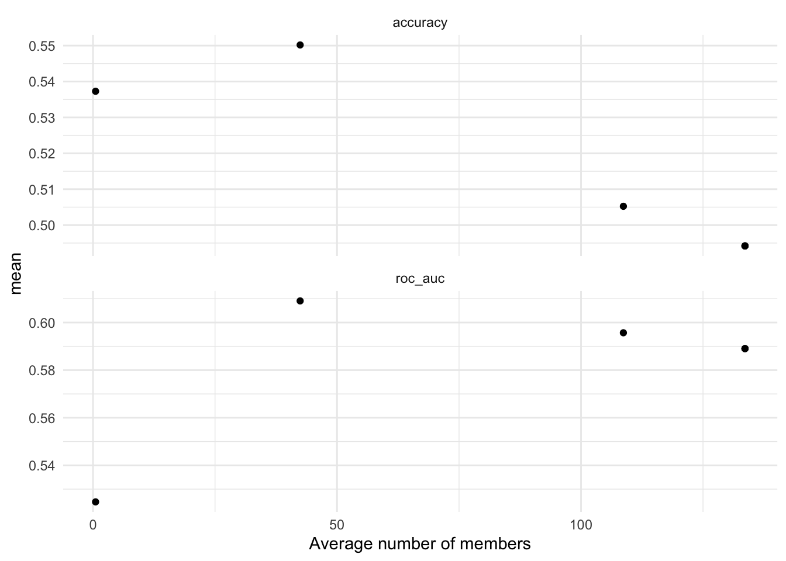
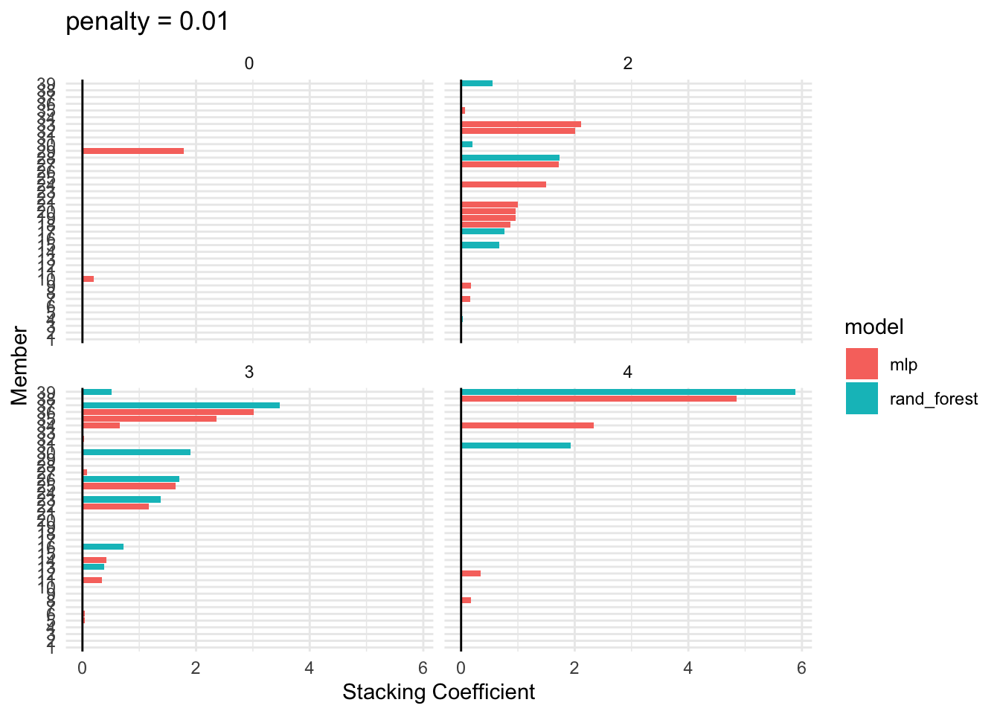

data analysis
Data analysis
Description of the data re statistical aspect:
- variables and measurement
- transformation of variables, including categories
| vars | n | mean | sd | median | trimmed | mad | min | max | range | skew | kurtosis | se |
|---|---|---|---|---|---|---|---|---|---|---|---|---|
| 1 | 934 | 2.0 | 0.79 | 2 | 1.9 | 0.0 | 1 | 4 | 3 | 0.72 | 0.39 | 0.026 |
| 2 | 934 | 2.8 | 0.92 | 3 | 2.9 | 1.5 | 1 | 4 | 3 | -0.26 | -0.85 | 0.030 |
| 3 | 934 | 1.5 | 0.50 | 2 | 1.6 | 0.0 | 1 | 3 | 2 | -0.11 | -1.80 | 0.017 |
| 4 | 934 | 1.6 | 0.83 | 1 | 1.5 | 0.0 | 1 | 3 | 2 | 0.91 | -0.94 | 0.027 |
| 5 | 934 | 3.1 | 1.46 | 4 | 3.1 | 1.5 | 1 | 5 | 4 | -0.43 | -1.25 | 0.048 |
| 6 | 934 | 1.8 | 0.97 | 1 | 1.8 | 0.0 | 1 | 3 | 2 | 0.36 | -1.84 | 0.032 |
| 7 | 934 | 2.8 | 0.52 | 3 | 3.0 | 0.0 | 1 | 4 | 3 | -2.21 | 5.67 | 0.017 |
| 8 | 934 | 2.7 | 1.66 | 2 | 2.7 | 1.5 | 1 | 5 | 4 | 0.39 | -1.53 | 0.054 |
| 9 | 934 | 2.7 | 1.66 | 2 | 2.7 | 1.5 | 1 | 5 | 4 | 0.39 | -1.53 | 0.054 |
| 10 | 934 | 1.5 | 0.95 | 1 | 1.3 | 0.0 | 1 | 4 | 3 | 1.57 | 0.84 | 0.031 |
| skim_type | skim_variable | n_missing | complete_rate | factor.ordered | factor.n_unique | factor.top_counts |
|---|---|---|---|---|---|---|
| factor | cvdrisk_index_merged | 0 | 1 | FALSE | 4 | 2: 500, 0: 262, 3: 123, 4: 49 |
| factor | age_categ | 0 | 1 | FALSE | 4 | 50-: 341, 30-: 267, 65+: 251, 18-: 75 |
| factor | gender | 0 | 1 | FALSE | 3 | 2: 504, 1: 427, 3: 3 |
| factor | waiting_time_yrs | 0 | 1 | FALSE | 3 | 1_2: 599, und: 208, abo: 127 |
| factor | edu_level_categ | 0 | 1 | FALSE | 5 | yr1: 335, cer: 263, pos: 182, yr1: 150 |
| factor | indig | 0 | 1 | FALSE | 3 | 0: 536, 4: 370, 1: 28 |
| factor | sleep_categ | 0 | 1 | FALSE | 4 | mod: 792, low: 79, lon: 43, not: 20 |
| factor | PHQ_cat | 0 | 1 | FALSE | 5 | Mil: 314, Sev: 276, Mod: 234, Non: 61 |
| factor | paincat | 0 | 1 | FALSE | 5 | Mil: 314, Sev: 276, Mod: 234, Non: 61 |
| factor | income_group | 0 | 1 | FALSE | 4 | Hig: 724, Low: 140, Upp: 56, Low: 14 |
Data stats

Values in data



Intro correlation

Initial model - imbalance data
V-Fold Cross-Validation - no repeats
V-fold cross-validation (also known as k-fold cross-validation) randomly splits the data into V groups of roughly equal size (called “folds”). A resample of the analysis data consists of V-1 of the folds while the assessment set contains the final fold. In basic V-fold cross-validation (i.e. no repeats), the number of resamples is equal to V. (v=10)
# 10-fold cross-validation using stratification
# A tibble: 10 × 2
splits id
<list> <chr>
1 <split [628/71]> Fold01
2 <split [628/71]> Fold02
3 <split [629/70]> Fold03
4 <split [629/70]> Fold04
5 <split [629/70]> Fold05
6 <split [629/70]> Fold06
7 <split [629/70]> Fold07
8 <split [629/70]> Fold08
9 <split [630/69]> Fold09
10 <split [631/68]> Fold10Metrics used to assess the model
Bagged tree model
══ Workflow [trained] ══════════════════════════════════════════════════════════
Preprocessor: Recipe
Model: bag_tree()
── Preprocessor ────────────────────────────────────────────────────────────────
1 Recipe Step
• step_nzv()
── Model ───────────────────────────────────────────────────────────────────────
Bagged CART (classification with 25 members)
Variable importance scores include:
# A tibble: 9 × 4
term value std.error used
<chr> <dbl> <dbl> <int>
1 PHQ_cat 49.1 1.45 25
2 age_categ 44.5 1.67 25
3 edu_level_categ 43.3 1.48 25
4 waiting_time_yrs 28.3 1.21 25
5 income_group 25.7 1.09 25
6 gender 22.3 1.18 25
7 sleep_categ 22.1 1.03 25
8 indig 21.4 0.922 25
9 paincat 9.82 0.587 25Importance of variable is shown in the value:
Most important ones:
-edu_level_categ
PHQ_cat
age_categ
interestingly - paincat has the lowest importance
Model fitting using resamples
# A tibble: 4 × 6
.metric .estimator mean n std_err .config
<chr> <chr> <dbl> <int> <dbl> <chr>
1 accuracy multiclass 0.522 10 0.0181 Preprocessor1_Model1
2 mn_log_loss multiclass 1.11 10 0.0252 Preprocessor1_Model1
3 pr_auc macro 0.364 10 0.0107 Preprocessor1_Model1
4 roc_auc hand_till 0.625 10 0.0118 Preprocessor1_Model1Addressing class imbalances
Class imbalance refers to the cases where the distribution of classes in the data is uneven, or significantly skewed. In this case a particular class has a larger number of data points compared to other classes. Such imbalance generally leads to results biased towards the majority class which may show higher accuracy in prediction most of the time, while the minority class tends to show poor performance. In severe cases minority class can be completely ignored. This represent a serious issue as generally, it is the minority class is the class of interest, e.g. critical rare events or anomalies.
While class imbalances is a challenge in machine learning tasks, such cases are quite common in practice and there are different techniques to address them. These techniques include resampling, cost-sensitive learning, algorithmic techniques (i.e. the use of algorithms that are capable of handing class imbalances, such as decision trees or ensember learning approaches), data augmentation approaches (e.g. under/oversampling) and anomaly detection.
Class imbalances approaches - brief statement
Class imbalances approaches used in the study - brief statement
Applying SMOTE Algorithm: generates new examples of the minority class using nearest neighbors of these cases.
# A tibble: 4 × 6
.metric .estimator mean n std_err .config
<chr> <chr> <dbl> <int> <dbl> <chr>
1 accuracy multiclass 0.445 10 0.0163 Preprocessor1_Model1
2 mn_log_loss multiclass 1.43 10 0.101 Preprocessor1_Model1
3 pr_auc macro 0.356 10 0.0122 Preprocessor1_Model1
4 roc_auc hand_till 0.619 10 0.0123 Preprocessor1_Model1random forest
# A tibble: 20 × 8
mtry min_n .metric .estimator mean n std_err .config
<int> <int> <chr> <chr> <dbl> <int> <dbl> <chr>
1 3 17 accuracy multiclass 0.483 10 0.0162 Preprocessor1_Model03
2 4 22 accuracy multiclass 0.482 10 0.0132 Preprocessor1_Model05
3 7 10 accuracy multiclass 0.465 10 0.0156 Preprocessor1_Model09
4 9 9 accuracy multiclass 0.465 10 0.0181 Preprocessor1_Model04
5 21 16 accuracy multiclass 0.463 10 0.0176 Preprocessor1_Model01
6 13 28 accuracy multiclass 0.462 10 0.0135 Preprocessor1_Model08
7 16 4 accuracy multiclass 0.460 10 0.0154 Preprocessor1_Model06
8 25 38 accuracy multiclass 0.452 10 0.0193 Preprocessor1_Model10
9 17 35 accuracy multiclass 0.450 10 0.0145 Preprocessor1_Model02
10 23 30 accuracy multiclass 0.443 10 0.0174 Preprocessor1_Model07
11 17 35 roc_auc hand_till 0.625 10 0.0150 Preprocessor1_Model02
12 25 38 roc_auc hand_till 0.624 10 0.0162 Preprocessor1_Model10
13 13 28 roc_auc hand_till 0.623 10 0.0147 Preprocessor1_Model08
14 4 22 roc_auc hand_till 0.622 10 0.0135 Preprocessor1_Model05
15 23 30 roc_auc hand_till 0.621 10 0.0150 Preprocessor1_Model07
16 7 10 roc_auc hand_till 0.620 10 0.0108 Preprocessor1_Model09
17 3 17 roc_auc hand_till 0.620 10 0.0151 Preprocessor1_Model03
18 21 16 roc_auc hand_till 0.618 10 0.0115 Preprocessor1_Model01
19 9 9 roc_auc hand_till 0.616 10 0.00956 Preprocessor1_Model04
20 16 4 roc_auc hand_till 0.608 10 0.00697 Preprocessor1_Model06
Neural network model
# A tibble: 20 × 9
hidden_units penalty epochs .metric .estimator mean n std_err .config
<int> <dbl> <int> <chr> <chr> <dbl> <int> <dbl> <chr>
1 9 2.72e- 7 837 accuracy multiclass 0.408 10 0.0164 Preproc…
2 6 4.60e- 6 481 accuracy multiclass 0.394 10 0.0188 Preproc…
3 8 7.03e- 3 358 accuracy multiclass 0.375 10 0.0206 Preproc…
4 9 2.72e- 1 261 accuracy multiclass 0.373 10 0.0218 Preproc…
5 7 9.26e- 2 964 accuracy multiclass 0.369 10 0.0123 Preproc…
6 5 1.29e- 4 128 accuracy multiclass 0.358 10 0.0139 Preproc…
7 4 2.79e- 9 533 accuracy multiclass 0.344 10 0.0193 Preproc…
8 3 1.45e- 8 16 accuracy multiclass 0.337 10 0.0185 Preproc…
9 2 9.71e-10 672 accuracy multiclass 0.333 10 0.0237 Preproc…
10 1 5.00e- 5 737 accuracy multiclass 0.249 10 0.00846 Preproc…
11 3 1.45e- 8 16 roc_auc hand_till 0.621 10 0.0216 Preproc…
12 6 4.60e- 6 481 roc_auc hand_till 0.611 10 0.0233 Preproc…
13 5 1.29e- 4 128 roc_auc hand_till 0.611 10 0.0185 Preproc…
14 7 9.26e- 2 964 roc_auc hand_till 0.597 10 0.0201 Preproc…
15 9 2.72e- 1 261 roc_auc hand_till 0.596 10 0.0269 Preproc…
16 1 5.00e- 5 737 roc_auc hand_till 0.595 10 0.0239 Preproc…
17 4 2.79e- 9 533 roc_auc hand_till 0.589 10 0.0143 Preproc…
18 2 9.71e-10 672 roc_auc hand_till 0.584 10 0.0208 Preproc…
19 9 2.72e- 7 837 roc_auc hand_till 0.575 10 0.0167 Preproc…
20 8 7.03e- 3 358 roc_auc hand_till 0.573 10 0.0169 Preproc…
Stacking results
# A tibble: 10 × 4
member type weight class
<chr> <chr> <dbl> <fct>
1 .pred_3_rand_forest_res_1_03 rand_forest 5.89 4
2 .pred_2_nnet_res_1_03 mlp 4.85 4
3 .pred_3_rand_forest_res_1_05 rand_forest 3.47 3
4 .pred_4_nnet_res_1_03 mlp 3.01 3
5 .pred_3_nnet_res_1_09 mlp 2.36 3
6 .pred_3_nnet_res_1_05 mlp 2.34 4
7 .pred_2_nnet_res_1_02 mlp 2.11 2
8 .pred_4_nnet_res_1_08 mlp 2.00 2
9 .pred_4_rand_forest_res_1_02 rand_forest 1.93 4
10 .pred_4_rand_forest_res_1_03 rand_forest 1.90 3 


Evaluating on test data
# A tibble: 1 × 3
.metric .estimator .estimate
<chr> <chr> <dbl>
1 roc_auc hand_till 0.601# A tibble: 18 × 3
cvdrisk_index_merged name value
<dbl> <chr> <dbl>
1 1 .pred_class 0.574
2 1 .pred_class_nnet_res_1_05 0.383
3 1 .pred_class_nnet_res_1_08 0.409
4 1 .pred_class_rand_forest_res_1_08 0.477
5 1 .pred_class_rand_forest_res_1_03 0.498
6 1 .pred_class_rand_forest_res_1_06 0.489
7 1 .pred_class_rand_forest_res_1_02 0.468
8 1 .pred_class_rand_forest_res_1_10 0.477
9 1 .pred_class_nnet_res_1_09 0.315
10 1 .pred_class_nnet_res_1_01 0.349
11 1 .pred_class_nnet_res_1_02 0.391
12 1 .pred_class_nnet_res_1_10 0.421
13 1 .pred_class_nnet_res_1_07 0.281
14 1 .pred_class_nnet_res_1_06 0.421
15 1 .pred_class_nnet_res_1_04 0.391
16 1 .pred_class_rand_forest_res_1_05 0.494
17 1 .pred_class_nnet_res_1_03 0.409
18 1 .pred_class_rand_forest_res_1_04 0.494